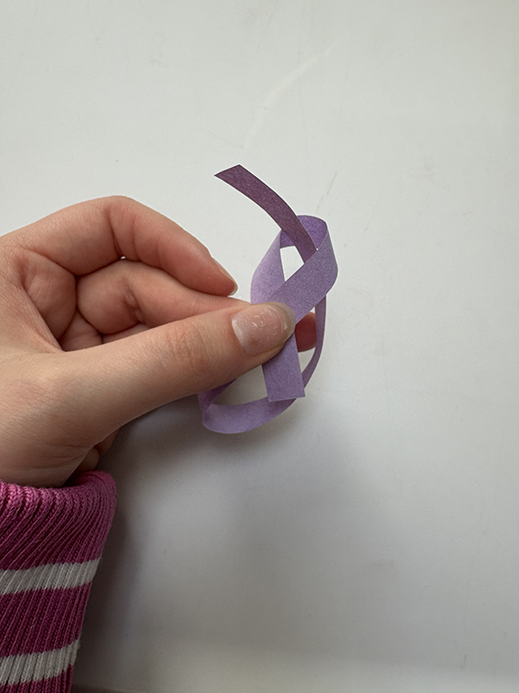
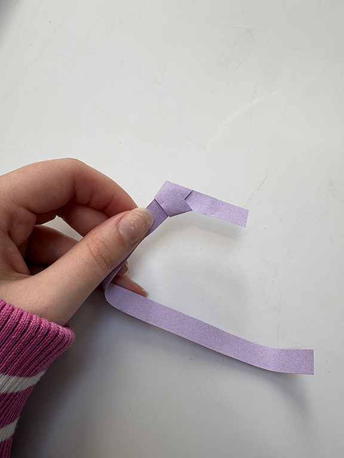

How to Make: Origami Lucky Paper Stars
Step 2: Knot Tying
• Tie a simple knot at one end (like tieing your shoes).
• Cross the ends of the strips and pull one end through the loop that forms.
• Gently tighten the knot, then gently pull the knot without creasing or ripping the strip of paper.
• Lightly press it down and crease. You should have a pentagon with a long end and a short end sticking out.

